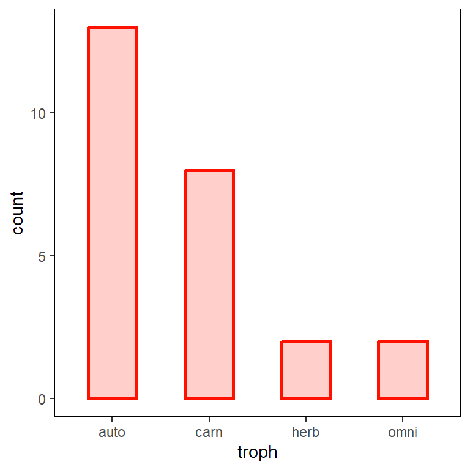
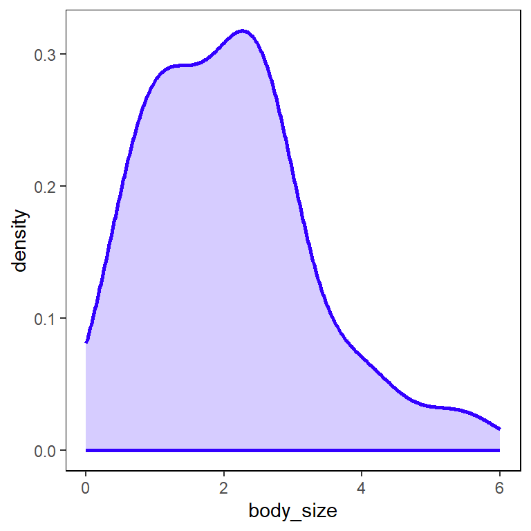

set.seed(777)
N = 25
trophs = c('carn','omni','herb','auto')Food webs are representations of the feeding relationships between plants, animals, and other organisms in an ecosystem. Ecologists will often use network graphs and network analysis to describe and analyze these feeding relationships. A major goal of theoretical ecology is coming up with models that can be used describe empirical food webs. A good place to start this process is by simulating feeding relationships. Network science and computation can help us do this.
In this post, I develop a simulation of a food web based on body size and dietary strategy. My goal is to understand some of the structural implications that arise from these two drivers. This is a work in progress.
Species attributes
The first thing I’m going to do is generate some species attributes. These attributes includes things we might measure about species (e.g., body size) and categories we might place different species in (e.g., trophic level).
First, I’ll imagine I have 25 species from four different trophic levels: carnivore, omnivore, herbivore, and autotroph.
I can sample with replacement from a vector of these trophic levels to assign each species to one of them. If I use the default prob in the sample function, each level is sampled with equal probability. This is something I might want to change to reflect empirical food webs. For example, there tend to be a lot of plants and carnivores, and relatively fewer omnivores and herbivores.

Next, I need to assign each species a body size. This is somewhat awkward to do for plants (autotrophs), so for simplicity, I’ll assume that plant body size refers to the total edible biomass of that particular plant, on average.
Since body sizes are always positive, continuous values, I’ll use a gamma distribution.
body_size = rgamma(N, shape = 2)
So I have many species that are pretty small and some a bit larger. The units here are pretty arbitrary here but maybe I can think of them as hundreds of pounds?
Now I can store all of these in a data frame.
d = data.frame(
species = 1:N,
troph = sample( trophs, size = N, replace = TRUE, prob = c(0.3,0.1,0.1,0.5) ),
body_size = rgamma(N, shape = 2)
)
head(d) species troph body_size
1 1 auto 4.5290711
2 2 auto 0.5468126
3 3 carn 0.9878395
4 4 auto 1.5093469
5 5 auto 3.0427018
6 6 carn 1.4672133Feeding relationships as dyads
The object of analysis in a food web is not the individual species – it is the relationships between them. So I’ll need to create a dyadic dataset. There are many simple ways to do this but I will do it in a slightly more complicated way so that the structure of the dataset is tidy.
I begin by creating a grid of every pair of species.
g = expand.grid(1:N, 1:N)
head(g) Var1 Var2
1 1 1
2 2 1
3 3 1
4 4 1
5 5 1
6 6 1Next I merge this grid twice with the individual attributes using first and second columns as primary keys to link the grid with the data frame.
g = merge(g, d, by.x = 'Var1', by.y = 'species')
g = merge(g, d, by.x = 'Var2', by.y = 'species')
head(g) Var2 Var1 troph.x body_size.x troph.y body_size.y
1 1 1 auto 4.529071 auto 4.529071
2 1 15 carn 2.457736 auto 4.529071
3 1 20 auto 2.457149 auto 4.529071
4 1 22 carn 1.393432 auto 4.529071
5 1 25 auto 0.524775 auto 4.529071
6 1 6 carn 1.467213 auto 4.529071The result is a bit messy, so I’ll do some rename and reordering to clean it up.
colnames(g) = c('prey','pred','troph_pred','body_size_pred', 'troph_prey', 'body_size_prey')
# tidy it up
g = g %>%
arrange(pred,prey) %>%
mutate(dyad = 1:nrow(g)) %>%
select(pred, prey, dyad, troph_pred, troph_prey, body_size_pred, body_size_prey)
head(g) pred prey dyad troph_pred troph_prey body_size_pred body_size_prey
1 1 1 1 auto auto 4.529071 4.5290711
2 1 2 2 auto auto 4.529071 0.5468126
3 1 3 3 auto carn 4.529071 0.9878395
4 1 4 4 auto auto 4.529071 1.5093469
5 1 5 5 auto auto 4.529071 3.0427018
6 1 6 6 auto carn 4.529071 1.4672133I’ve given an id to every dyad and I’ve tagged the predators and prey in each dyad. Thus you can read the original grid as column 1 eats column 2.
Now I want to create some additional variables. The first is the difference between the body size of the predator and prey.
# calculate body size differences
g$body_size_diff = (g$body_size_pred - g$body_size_prey)+0.1 I add 0.1 to the difference so that dyads which are the same species do not zero out. This is a little bit hacky but it is necessary for steps I’ll take later on.
The other variables will index specific types of feed interactions. These are carnivory, omnivory, and herbivory. Although I know what the trophic level of each species is, I want to tag specific instances of these dietary strategies which helps me deal with the constraints each species has. For example, plants don’t eat any species, while carnivores can only each omnivores or herbivores. This is a way of specifying which feeding relationships are actually possible.
# carnivores
g$carnivory = ifelse(g$troph_pred == 'carn' & !g$troph_prey == 'auto', 1, 0)
# omnivores
g$omnivory = ifelse(g$troph_pred == 'omni' , 1, 0)
# herbivory
g$herbivory = ifelse(g$troph_pred == 'herb' & g$troph_prey == 'auto' , 1, 0)The final data frame looks something like this.
head(g) pred prey dyad troph_pred troph_prey body_size_pred body_size_prey
1 1 1 1 auto auto 4.529071 4.5290711
2 1 2 2 auto auto 4.529071 0.5468126
3 1 3 3 auto carn 4.529071 0.9878395
4 1 4 4 auto auto 4.529071 1.5093469
5 1 5 5 auto auto 4.529071 3.0427018
6 1 6 6 auto carn 4.529071 1.4672133
body_size_diff carnivory omnivory herbivory
1 0.100000 0 0 0
2 4.082258 0 0 0
3 3.641232 0 0 0
4 3.119724 0 0 0
5 1.586369 0 0 0
6 3.161858 0 0 0Models
We’re almost ready to simulate. Before we do, I’ll talk a little bit about the two models I’m going to use.
A simple allometric model
The allometric model basically says that species will feed according to their body size. This implies that the probability of a feed relationship between any two species scales with body size. Here I am using a power function accomplish this:
\(p_{ij} = D_{ij}^\alpha\)
This says that the probability between any two species \(ij\) is a function the difference between those two species (\(D_{ij}\)) raised to the power \(\alpha\). But if I run this as is…
a = 1.15
D = g$body_size_diff
p = sign(D)*abs(D)^a
# look at first 10 values
p[1:10] [1] 0.07079458 5.04121914 4.42013512 3.70027192 1.70006271 3.75780028
[7] 4.20830669 4.93041051 2.59683707 0.10331906There is a weird trick in here (sign(D)*abs(D)^alpha) because R will spit out some NaN values when we take a value to a non-integer power. See the discussion of this here.
There is one problem with the values of p though; they are not probabilities. So we will need to convert them to probabilities using a logit link transformation. So the actual equation looks like this:
\(p_{ij} = logistic(D_{ij}^\alpha)\)
# link functions
logit = function(p) { log( p / (1 - p)) }
inv_logit = function(x) { 1 / (1+ exp(-x) ) }
a = 1.15
D = g$body_size_diff
p = inv_logit( sign(D)*abs(D)^a )
# look at first 10 values
p[1:10] [1] 0.5176913 0.9935757 0.9881105 0.9758794 0.8455429 0.9771971 0.9853464
[8] 0.9928283 0.9306577 0.5258068That looks a bit better.
Dietary model
The other model uses the index variables for feeding strategies to determine the probability of a link. This model essentially says that the probability of any given link is determined by the rate at which that feeding strategies occurs.
\(p_{ij} = logistic( \beta_{C}C + \beta_{O}O + \beta_{H}H)\)
We set that rate using beta coefficients on each of the index variables. Since any particular link can only be 1 strategy, the other strategies zero out of the equation.
bC = 0.5
bO = 0.5
bH = 0.5
p = inv_logit( bC*g$carnivory + bO*g$omnivory + bC*g$omnivory )In practice, we might set specific rates for specific pairs of species, or give each species an offset. In this case, we just have a constant probability for each type of interaction.